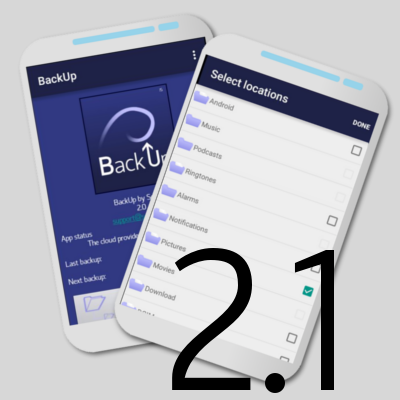

* More backup intervals
* Better support for tablets
Version 2
* Smaller memory footprint
* Selective File Support (SFS)
* Better support for large files

Version 2.1
* Override previous backups
* Various bugfixes
?
Once there is a next release it will be placed here :-)
Upgrading from v1 to v2
You will receive the update automatically by Google Play.
Things you need to do
As the core of the app improved and changed dramatically, we could not save all your preferences.
You will need to reselect the folders and/or files you want to backup.
The backup interval and other settings are saved and reconfigured for you during the update process.